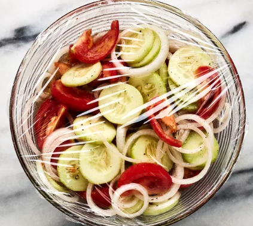

Tomato salad

There's a lot to love about this top-rated cucumber tomato salad recipe.
It's inexpensive to make using everyday ingredients, it's a crisp and refreshing
side dish that goes with just about anything, and it has make-ahead convenience built right in
Ingredients:
- 1 cup water
- ¼ cup vegetable oil
- 1 teaspoon salt, or to taste
- 1 teaspoon freshly ground black pepper, or to taste
- 3 cucumbers, peeled and sliced ¼-inch thick
- 3 tomatoes, cut into wedges
- 1 onion, sliced and separated into rings
Recipe:
- Gather all ingredients.
- Whisk water, vinegar, oil, sugar, salt, and pepper together in a large bowl until smooth.
- Add cucumbers, tomatoes, and onion and stir to coat.
- Cover bowl with plastic wrap; refrigerate for at least 2 hours for best flavor results.
Return to the homepage